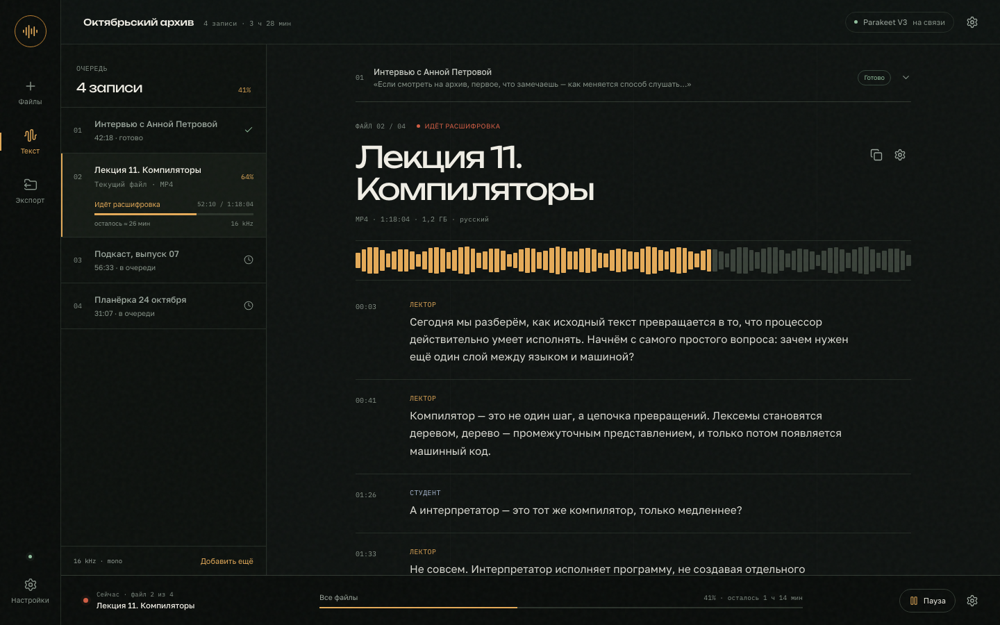

Открыть01
Tape Room
Полевой рекордер, который стал приложением
Тёмный экран, плёночные метки и тихий янтарный акцент. Слева — плотная очередь записей, справа — расшифровка как рабочий документ. Внизу общий прогресс, рядом с текущим файлом — его собственный.